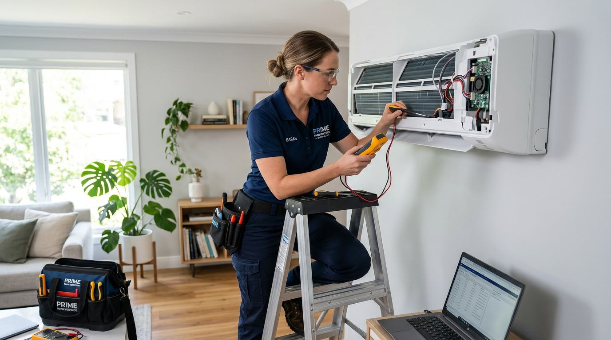

Kami hadir untuk memberikan solusi kenyamanan udara di ruangan Anda. Layanan profesional, cepat, dan bergaransi untuk perumahan, perkantoran, dan komersial di area Panam dan sekitarnya.

Teknisi Berpengalaman
Alasan kami adalah pilihan tepat untuk perawatan AC Anda
Kami menawarkan layanan service AC dengan harga yang murah dan transparan, tanpa biaya tersembunyi. Solusi hemat untuk tagihan perawatan Anda.
Dikerjakan oleh teknisi berpengalaman, kami menjamin hasil kerja yang terbaik, awet, dan AC Anda kembali dingin maksimal seperti baru.
Waktu Anda berharga. Tim kami selalu siap meluncur dengan cepat ke lokasi Anda di seluruh wilayah Panam dan Pekanbaru.
Setiap perbaikan dan pemasangan yang kami lakukan dilengkapi dengan jaminan garansi untuk ketenangan pikiran Anda.
Berbagai solusi untuk segala kebutuhan AC Anda
Pembersihan total unit indoor dan outdoor untuk menjaga udara tetap bersih dan dingin maksimal.
Penanganan masalah AC bocor, mati total, error, atau penggantian suku cadang asli.
Jasa bongkar AC lama dan pemasangan AC baru atau pemindahan ke lokasi lain dengan aman.
Pengecekan tekanan freon dan pengisian freon R22, R32, maupun R410a agar dingin maksimal.
Pertanyaan umum seputar layanan Service AC Panam Pekanbaru
Kami adalah penyedia layanan Service AC Panam Pekanbaru terbaik dan terpercaya yang memprioritaskan kepuasan pelanggan. Dengan tim teknisi yang berpengalaman bertahun-tahun, kami mampu menangani segala jenis masalah pendingin ruangan dengan cepat dan tepat sasaran. Selain itu, kami menawarkan tarif yang transparan dan murah tanpa mengorbankan kualitas pelayanan. Setiap pengerjaan kami juga dilengkapi dengan garansi, sehingga Anda bisa merasa tenang. Baik untuk kebutuhan rumah tangga maupun komersial, kami adalah solusi cerdas untuk kenyamanan ruangan Anda.
Biaya cuci AC yang kami tawarkan sangat bervariasi bergantung pada kapasitas PK AC (0.5 PK, 1 PK, hingga 2 PK ke atas) serta tingkat kekotorannya, namun kami pastikan harga kami adalah salah satu yang paling murah dan bersaing di kawasan Panam, Pekanbaru. Cuci AC standar biasanya mencakup pembersihan filter, pembersihan unit indoor (evaporator) dan unit outdoor (kondensor), serta pengecekan tekanan freon. Silakan hubungi nomor WhatsApp kami untuk mendapatkan estimasi harga pasti yang sesuai dengan tipe AC Anda.
Untuk menjaga kinerja AC tetap optimal dan udara di dalam ruangan tetap bersih, sangat disarankan untuk melakukan cuci AC secara rutin setiap 3 hingga 4 bulan sekali. Namun, jika AC Anda beroperasi terus-menerus hampir 24 jam sehari (seperti di perkantoran, minimarket, atau server room), atau lokasi Anda berada di pinggir jalan raya yang banyak debu, kami merekomendasikan pencucian setiap 2 bulan sekali. Perawatan rutin ini adalah investasi terbaik untuk mencegah kerusakan parah dan memperpanjang umur pakai kompresor AC Anda.
Tentu saja! Semua layanan perbaikan, penggantian suku cadang (sparepart), hingga jasa bongkar pasang AC yang kami lakukan dilengkapi dengan jaminan garansi. Durasi garansi bervariasi mulai dari 1 bulan hingga 3 bulan tergantung pada jenis kerusakan dan suku cadang yang diganti. Sebagai layanan service ac panam pekanbaru yang bertanggung jawab, jika masalah yang sama muncul kembali dalam masa garansi akibat kesalahan teknis kami, tim kami akan memperbaikinya secara gratis tanpa biaya tambahan.
Ada beberapa faktor yang bisa menyebabkan AC hanya mengeluarkan angin tanpa rasa dingin. Penyebab paling umum adalah saringan udara (filter) atau evaporator yang sangat kotor sehingga menghambat sirkulasi udara. Kemungkinan lainnya adalah kekurangan gas freon akibat adanya kebocoran pada pipa instalasi. Selain itu, kerusakan pada komponen kelistrikan seperti kapasitor kompresor yang mati, atau kompresor yang sudah lemah juga bisa menjadi pemicu utamanya. Tim teknisi kami akan melakukan pengecekan menyeluruh untuk mendiagnosis secara akurat dan memberikan solusi terbaik.
Banyak yang salah paham bahwa freon harus diisi setiap kali cuci AC. Kenyataannya, freon AC bekerja dalam sistem siklus tertutup. Artinya, freon tidak akan pernah habis atau berkurang KECUALI jika ada kebocoran pada pipa kapiler, nepel, atau unit kondensor/evaporator. Anda baru perlu menambah atau mengisi ulang freon jika teknisi telah mengecek tekanannya menggunakan alat manifold gauge dan memastikan tekanannya berada di bawah standar normal, atau jika baru saja dilakukan pengelasan kebocoran dan proses vakum ulang pada unit AC Anda.
Ya, kami melayani jasa bongkar pasang AC untuk Anda yang sedang pindah rumah, kos, atau kantor di seluruh wilayah Panam dan kota Pekanbaru pada umumnya. Jasa ini mencakup proses "pump down" (menyimpan freon ke dalam kompresor agar tidak terbuang sia-sia saat AC dibongkar), pelepasan bracket, hingga pemasangan kembali di lokasi yang baru lengkap dengan pembobokan tembok standar, instalasi pipa, dan penarikan kabel listrik. Kami pastikan AC Anda akan berfungsi sama dinginnya seperti sebelum dipindahkan.
AC yang meneteskan air dari unit indoor umumnya disebabkan oleh tersumbatnya pipa pembuangan air (drainase) oleh kotoran, debu, atau lendir jamur yang menumpuk seiring waktu. Air kondensasi yang seharusnya mengalir keluar akhirnya meluap ke dalam ruangan. Solusi paling efektif adalah melakukan pencucian AC secara menyeluruh, di mana teknisi kami akan menembakkan air bertekanan tinggi (steam) ke saluran pembuangan untuk membersihkan sumbatan tersebut. Dalam beberapa kasus, kemiringan instalasi unit indoor yang kurang tepat juga bisa menjadi penyebabnya dan kami dapat memperbaikinya untuk Anda.
Keandalan teknisi adalah prioritas utama kami. Tim teknisi Service AC Panam Pekanbaru kami telah melewati seleksi dan pelatihan ketat terkait prosedur standar keselamatan, kelistrikan (SOP kelistrikan HVAC), dan etika pelayanan pelanggan. Mereka tidak hanya berpengalaman dalam mengatasi berbagai masalah AC, tetapi juga ramah, sopan, dan diwajibkan menjaga kebersihan lokasi rumah Anda selama dan setelah proses pengerjaan selesai.
Waktu pengerjaan sangat bergantung pada jenis layanan. Untuk cuci AC standar, biasanya memakan waktu sekitar 30 hingga 45 menit per unit. Untuk jasa perbaikan ringan hingga menengah (seperti penggantian kapasitor atau perbaikan modul PCB), bisa memakan waktu 1 hingga 2 jam. Sedangkan untuk jasa berat seperti mencari titik kebocoran freon, pengelasan pipa, vakum sistem, dan isi freon full, bisa memakan waktu antara 2 hingga 4 jam. Kami selalu berusaha bekerja secara efisien namun tetap mengutamakan hasil terbaik.
Tentu saja. Selain pelanggan perorangan, kami juga membuka kemitraan berupa kontrak kerja sama perawatan (maintenance contract) untuk gedung perkantoran, ruko, pabrik, instansi pemerintah, sekolah, minimarket, dan fasilitas komersial lainnya di Panam dan sekitarnya. Dengan kontrak perawatan, kami akan menjadwalkan kunjungan rutin tanpa Anda harus repot mengingatnya, sehingga sistem pendingin di tempat usaha Anda selalu terjaga dengan biaya borongan yang jauh lebih murah dan ekonomis.
Kompresor adalah "jantung" dari sebuah AC. Tanda-tanda kompresor mulai bermasalah antara lain: AC butuh waktu sangat lama untuk mendinginkan ruangan tidak seperti biasanya, terdengar suara berdengung keras atau suara gesekan kasar dari unit outdoor, meteran listrik (MCB) sering anjlok (turun) saat AC baru dinyalakan karena ampere kompresor naik terlalu tinggi, atau kipas outdoor berputar tetapi hembusan udaranya tidak terasa panas (menandakan kompresi freon gagal). Jika Anda mengalami hal ini, segera hubungi layanan terbaik kami untuk pengecekan lebih lanjut.
Ada beberapa tips sederhana yang bisa Anda lakukan: Pertama, cuci sendiri filter debu yang ada di unit indoor setiap 2-3 minggu sekali (cukup dibilas air). Kedua, atur suhu remote AC di angka yang ideal, yaitu 24-25 derajat Celcius (jangan memaksakan di 16 derajat jika ruangan tidak memungkinkan, karena kompresor akan bekerja tanpa henti dan boros listrik). Ketiga, pastikan ruangan tertutup rapat agar udara dingin tidak terbuang keluar. Dan yang terpenting, jadwalkan cuci AC besar (deep cleaning) dengan layanan kami secara berkala.
Kami sangat memahami bahwa kerusakan AC sering kali terjadi secara mendadak dan bisa sangat mengganggu kenyamanan keluarga Anda di waktu istirahat. Oleh karena itu, layanan kami tetap beroperasi penuh di akhir pekan (Sabtu & Minggu) dan sebagian besar hari libur nasional. Anda bisa langsung mengirimkan pesan WhatsApp ke nomor kami 6282366220069 untuk mengatur jadwal kedatangan teknisi, baik untuk hari itu juga maupun untuk penjadwalan esok harinya.
Kami memiliki keahlian teknis yang komprehensif untuk menangani hampir semua merek AC ternama yang beredar di Indonesia, seperti Daikin, Panasonic, Sharp, Samsung, LG, Gree, Aqua, Changhong, Midea, TCL, Mitsubishi, dan lain-lain. Selain itu, kami tidak hanya menangani AC tipe Split (yang umum dipakai di rumah tangga), tetapi juga berpengalaman dalam merawat dan memperbaiki AC Cassette, AC Standing Floor, serta AC Central berskala kecil hingga menengah. Keberagaman ini membuat kami diakui sebagai salah satu layanan terbaik di Pekanbaru.
Jangan tunggu sampai AC Anda rusak parah. Hubungi kami untuk layanan service AC Panam Pekanbaru yang murah dan terbaik!